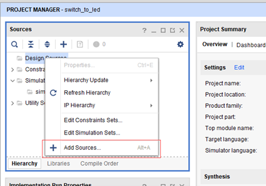
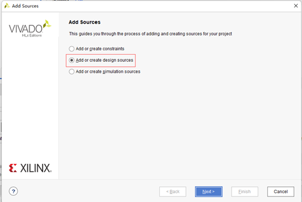
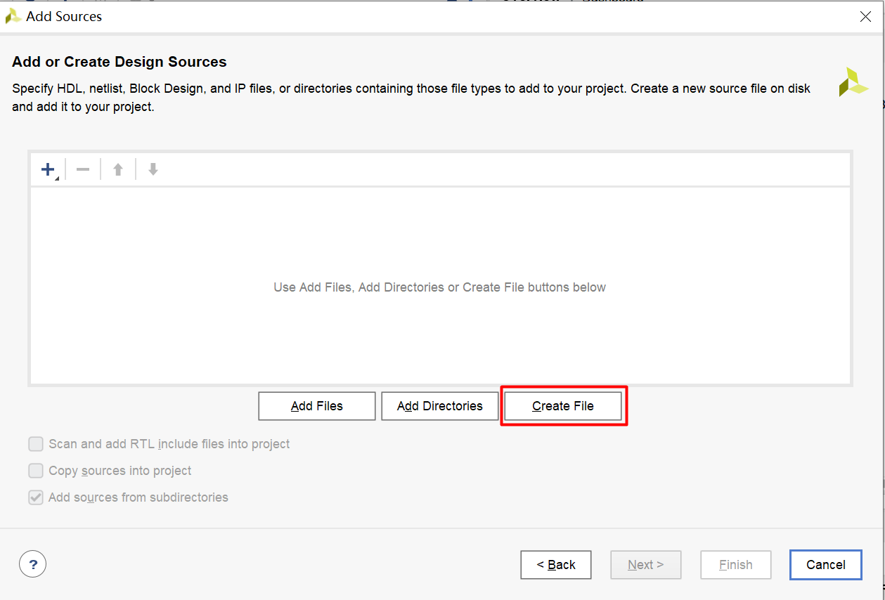
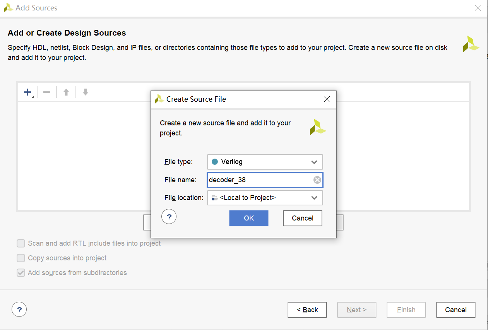
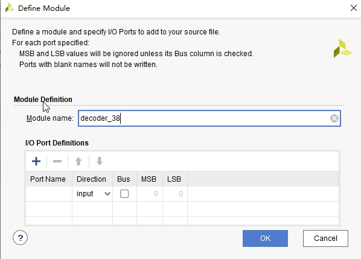
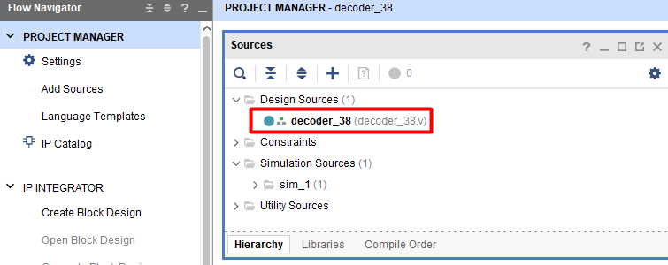

添加设计文件
1、添加设计文件¶
在后续的verilog实验当中，设计文件、RTL文件、功能文件、功能代码是同一个概念，指的是可以综合的verilog代码， 区分于用作仿真的testbench代码。
在源文件区域，右击Design Sources，选择Add Sources；

选择Add or create design sources，选择Next，进行下一步；

选择Create File，创建并添加设计文件。（开发过程中，也可以用vscode等编辑器先写好代码，再将代码移动到vivado工程目录下，然后在这一步选择Add Files添加已有代码 ）

接下来弹出如下对话框，File type即文件所用开发语言，默认是Verilog不用修改。File location即创建的文件存储路径，使用默认方式。中间的File name即文件名根据功能或需求命名，文件名称和位置路径中不能出现中文和空格，填写后点击 OK。

之后会显示待添加的所有文件列表，可以继续添加设计文件或者修改已添加设计文件设置，一次可以添加多个文件和多个目录，该实验我们只需要添加一个。
点击 Finish，会弹出如下Define Module对话框，vivado默认将module名设置为文件名， 在这一步直接点“OK”跳过IO端口设置进入下一步，在出现的弹框中点击Yes进行下一步。

经过几秒项目更新后，Design Sources里面有了设计文件decoder_38.v，双击打开，进行代码的编辑，编写3-8译码器的代码，到此设计文件添加完成。

decoder_38.v:
module decoder_38 (
input wire [2:0] en,
input wire [2:0] data_in,
output reg [7:0] data_out
);
always @ (*) begin
if (en == 3'b100) begin
case (data_in)
3'h0 : data_out = 8'hfe;
3'h1 : data_out = 8'hfd;
3'h2 : data_out = 8'hfb;
3'h3 : data_out = 8'hf7;
3'h4 : data_out = 8'hef;
3'h5 : data_out = 8'hdf;
3'h6 : data_out = 8'hbf;
3'h7 : data_out = 8'h7f;
default : data_out = 8'hff;
endcase
end
else data_out = 8'hff;
end
endmodule
2、改用VScode编辑器¶
虽然Vivado上集成了文本编辑器，但不够美观，编写效率也低，不适合编写大规模的RTL，推荐使用VScode编写。可以修改Vivado的默认编辑器为VScode，具体设置请参考“使用 VS Code 作为 Vivado 的默认代码编辑器”